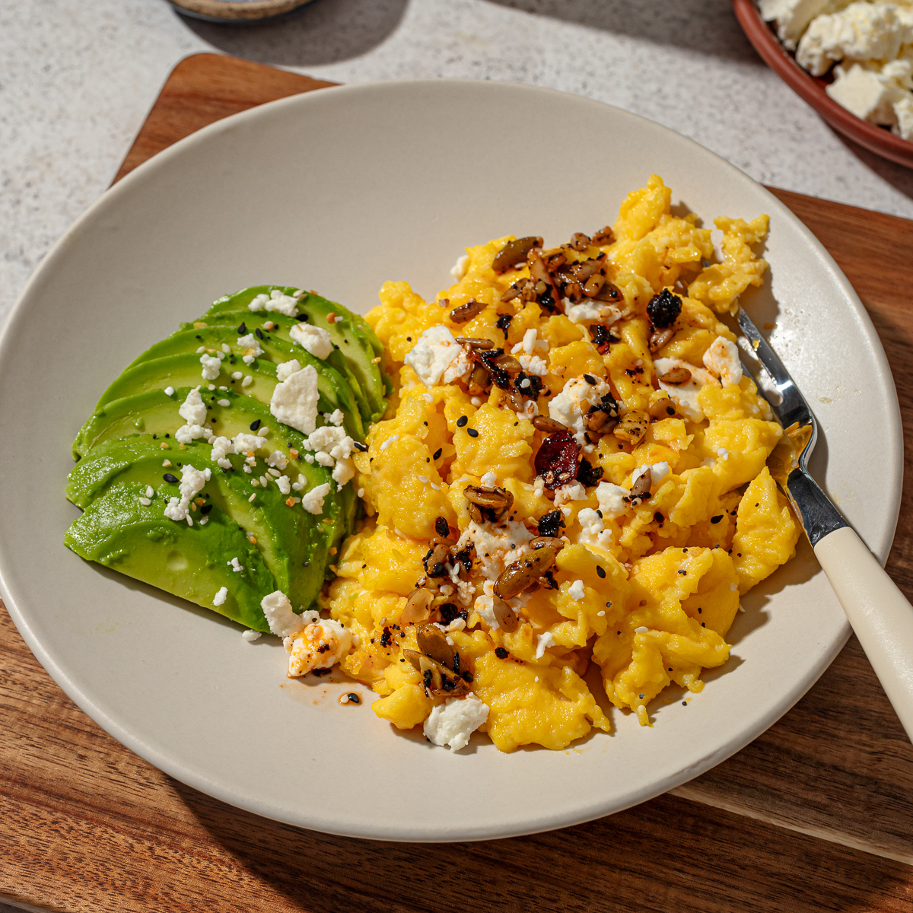

Back to all recipes
Fluffy Scrambled Eggs

Description
These fluffy scrambled eggs without milk will be your new favorite way to get that creamy, fluffy texture without needing a single splash of milk. Whether you’re dairy-free, on a low-carb diet, or neither, these amazing eggs are the perfect breakfast to start the day.
Ingredients
- 4 eggs
- 1/2 tbsp French butter (or olive oil)
- 1 avocado
- 1 tbsp salsa macha
- feta cheese
- Everything Bagel Seasoning
Instructions
- Whisk four room-temperature eggs.
- Heat French butter (or olive oil) on a pan at medium-low heat. Then, add your eggs.
- Cook eggs on low heat, gently bringing the eggs back and forth using a spatula. Be patient here, it's worth it!
- Just when it looks almost done, turn off the heat, as it will continue cooking using its own temperature.
- Serve it up with optional toppings like sliced avocado, salsa macha, feta cheese and Everything Bagel Seasoning. Enjoy!
Link to the original recipe